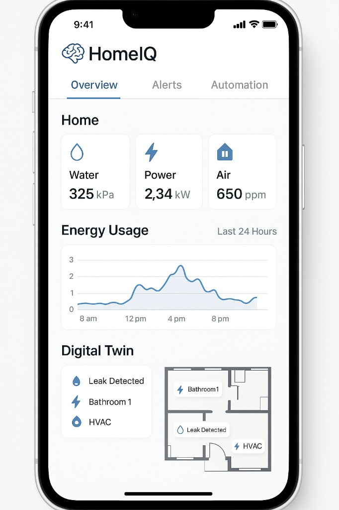

HomeIQ: O Cérebro de Infraestrutura para Condomínios.
Monitoramento inteligente de energia, água e bombas para condomínios e prédios: decisões baseadas em dados, redução de sinistros e maior eficiência operacional.
O Problema: Infraestrutura Invisível, Custos Visíveis
Condomínios e prédios enfrentam desafios diários com infraestrutura mal monitorada: contas imprevisíveis, sinistros recorrentes e falta de dados para gestão eficiente.
Contas de Energia Altas
Contas "estourando" sem saber onde está o gasto: garagens, bombas, elevadores ou áreas comuns?
Falta d'Água e Vazamentos
Falhas em bombas, transbordos de caixas d'água e vazamentos invisíveis geram sinistros e reclamações.
Gestão Reativa
Síndicos e gestores sempre apagando incêndios, sem dados históricos para prevenir problemas.
Pós-Obra Sem Dados
Construtoras enfrentam reclamações sem evidências objetivas e não aprendem com empreendimentos anteriores.
A Oportunidade: Um Mercado em Crescimento Exponencial
O mercado de automação e monitoramento predial está em expansão, com condomínios e prédios comerciais buscando soluções para gestão eficiente de infraestrutura.
Mercado Global Smart Building
US$ 101 bi (2023) → US$ 633 bi (2032), com um CAGR de 22,9%, incluindo automação residencial e predial.
Condomínios e Prédios Comerciais
Demanda crescente por submedição de energia, gestão de água e manutenção preditiva de equipamentos.
Pipeline de Novos Empreendimentos
5 milhões de novas unidades habitacionais no Brasil em 5 anos, além de retrofit de prédios existentes.
A Solução: HomeIQ
Um sistema de monitoramento de infraestrutura que transforma condomínios em empreendimentos inteligentes, com visibilidade total sobre energia, água e equipamentos críticos.
Submedição Setorizada
Monitoramento de energia por setor: áreas comuns, bombas, garagens, elevadores e andares (prédios comerciais).
Gestão Inteligente de Água
Medição de vazão, níveis de caixas d'água e cisternas, monitoramento de bombas e detecção de vazamentos.
Dashboards e Relatórios
Interface clara para síndicos e gestores, com relatórios históricos para construtoras e administradoras.
Digital Twin: Visibilidade Total da Infraestrutura
Transformamos o condomínio em um "gêmeo digital" interativo, permitindo visualização em tempo real de todos os sistemas.
- ✔Visualização de planta 2D/3D com status de equipamentos.
- ✔Alertas inteligentes de falhas e anomalias.
- ✔Histórico de consumo e relatórios para tomada de decisão.
- ✔API para integração com sistemas de administradoras.

Casos de Uso: Para Quem é o HomeIQ?
Nossa solução atende diferentes tipos de empreendimentos, cada um com necessidades específicas de monitoramento.
Condomínio de Casas
Monitoramento de áreas comuns e infraestrutura compartilhada.
- •Iluminação de vias internas e portaria
- •Bombas de água e irrigação
- •Áreas de lazer (piscina, salão)
- •Controle de consumo por setor
Prédio Residencial
Gestão completa de infraestrutura predial e prevenção de sinistros.
- •Garagem, iluminação e elevadores
- •Sistema de bombas e caixas d'água
- •Academia, salão de festas, piscina
- •Detecção de vazamentos e falhas
Prédio Comercial
Eficiência energética e conforto para ambientes corporativos.
- •Consumo por andar ou conjunto
- •Qualidade do ar e temperatura
- •Ar-condicionado central e fancoils
- •Manutenção preditiva de equipamentos
Benefícios para Construtoras
Dados objetivos de pós-obra para reduzir reclamações, melhorar projetos futuros e oferecer diferencial competitivo com "condomínio inteligente de verdade".
Impacto Sustentável: Nossos ODS
O HomeIQ está alinhado com os Objetivos de Desenvolvimento Sustentável da ONU, contribuindo para um futuro mais seguro e eficiente.
ODS 6 – Água potável e saneamento
Reduzimos desperdício com monitoramento de vazão, níveis de caixas d'água e detecção precoce de vazamentos em condomínios.
ODS 7 – Energia acessível e limpa
Submedição setorizada permite identificar desperdícios e otimizar o consumo de energia em áreas comuns e equipamentos.
ODS 11 – Cidades e comunidades sustentáveis
Tornamos condomínios e prédios mais seguros, eficientes e resilientes a sinistros através de monitoramento contínuo.
ODS 12 – Consumo e produção responsáveis
Dados precisos capacitam síndicos, gestores e construtoras a tomar decisões conscientes sobre recursos.
Modelo de Negócio: Hardware + SaaS para Condomínios
Receita recorrente através da venda de sistemas de monitoramento e assinatura de plataforma para gestão de dados.
Kit Básico
Monitoramento essencial para áreas comuns.
- Gateways para instalação em QGBT/casa de máquinas.
- Submedição de energia (áreas comuns, bombas, garagem).
- Monitoramento básico de água (vazão e nível).
- Dashboard web para síndico/gestor.
Kit Plus
Tudo do Básico + monitoramento ambiental.
- Tudo do Kit Básico.
- Monitoramento de bombas (corrente, ciclos, falhas).
- Sensores ambientais para áreas de lazer (temperatura, umidade, CO₂).
- Alertas inteligentes por WhatsApp/e-mail.
Kit Pro
Solução completa para prédios comerciais e condomínios premium.
- Tudo do Kit Plus.
- Monitoramento por andar/conjunto (prédios comerciais).
- Digital Twin 3D + Relatórios avançados para construtoras.
- API para integração com sistemas de administradoras.
Modelo de Receita SaaS
Assinatura mensal de R$ 299 a R$ 899 por condomínio/empreendimento para acesso à plataforma, dashboards, relatórios históricos e suporte técnico.
Tecnologia e Diferenciais
Arquitetura robusta e escalável, combinando hardware de mercado com software proprietário para monitoramento predial.
Stack Tecnológico
- Hardware: Gateways instalados em QGBT e casas de máquinas, medidores DIN (Shelly EM/3EM), sensores de nível e vazão.
- Conectividade: MQTT, Modbus RTU/TCP, protocolos industriais, WiFi/Ethernet.
- Backend: API REST (FastAPI/Node.js), banco de dados timeseries (InfluxDB/TimescaleDB).
- Frontend: Dashboards web responsivos, digital twin 2D/3D, relatórios customizados.
Diferenciais Competitivos
- Submedição setorizada de alta precisão para áreas comuns e equipamentos críticos.
- Monitoramento integrado de múltiplos sistemas (energia, água, bombas, ambiente).
- Compatibilidade com equipamentos de mercado (Shelly, Modbus, sensores padrão).
- Plataforma escalável: do monitoramento básico até automação completa e integração com sistemas de administradoras.
Roadmap de Desenvolvimento
Evolução estratégica do protótipo à escala comercial, com foco em pilotos e parcerias com construtoras.
2025–2026: Fase APOC e Pilotos
Desenvolvimento do MVP com monitoramento de energia e água. Início de pilotos em 1-3 condomínios (residencial e comercial) para validação de campo.
2026: Integração com Construtoras
Estabelecimento de parcerias com construtoras para instalação em novos empreendimentos. Desenvolvimento do Kit Plus com sensores ambientais e monitoramento de bombas.
2027: Retrofit e Kit Pro
Expansão para retrofit de prédios existentes. Lançamento do Kit Pro com Digital Twin 3D, API para administradoras e relatórios avançados para construtoras.
2028+: Escala e Expansão para Unidades
Certificações (INMETRO/ANATEL), parcerias com seguradoras e expansão opcional para nível de unidade (apartamento/casa) usando mesma base tecnológica.
Parceria para Transformar Condomínios
Buscamos construtoras, administradoras e parceiros estratégicos para pilotos e co-desenvolvimento de soluções de monitoramento predial.
O Que Buscamos
- 🏗️Construtoras: Pilotos em empreendimentos para validação, feedback de pós-obra e diferencial competitivo.
- 🏢Administradoras: Acesso a base de condomínios para testes de campo e integração de sistemas.
- 🤝Parceiros Estratégicos: Apoio em P&D, certificações e conexão com seguradoras e empresas de manutenção.
O Que Oferecemos
- ✔Solução brasileira de deep tech para monitoramento predial com foco em eficiência e segurança.
- ✔Dados objetivos para reduzir reclamações de pós-obra e melhorar projetos futuros.
- ✔Diferencial competitivo: "condomínio inteligente de verdade", alinhado a ODS e políticas de eficiência energética.
- ✔Plataforma escalável com potencial de internacionalização e patentes.